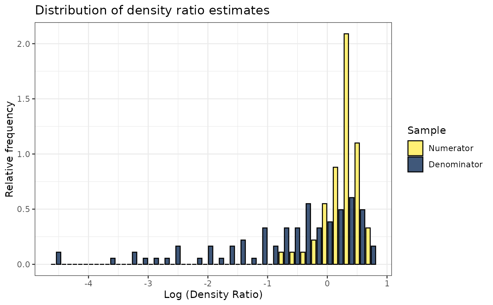
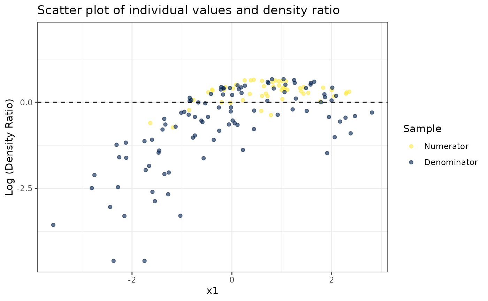
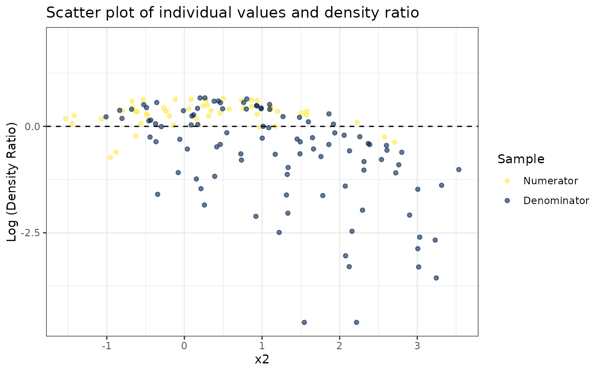
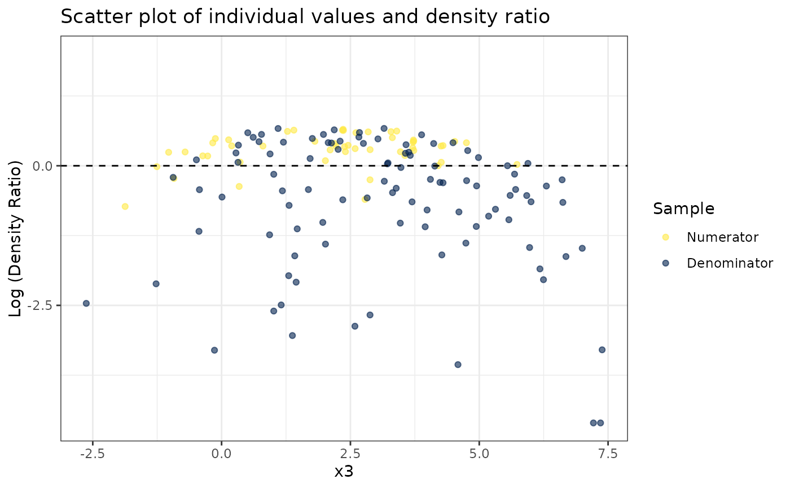
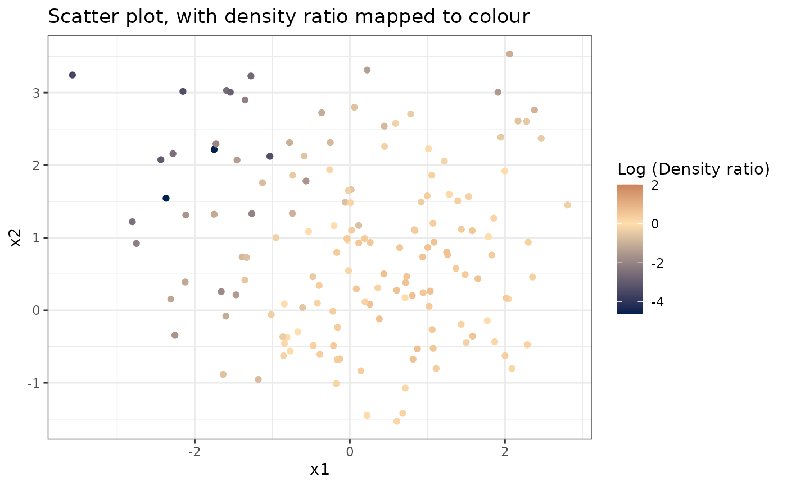
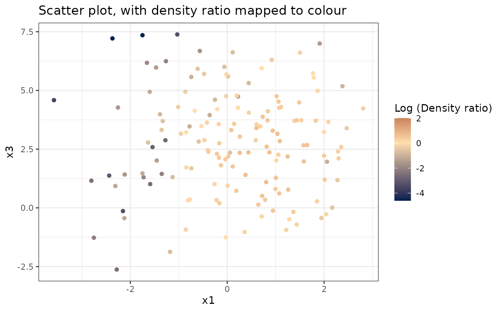
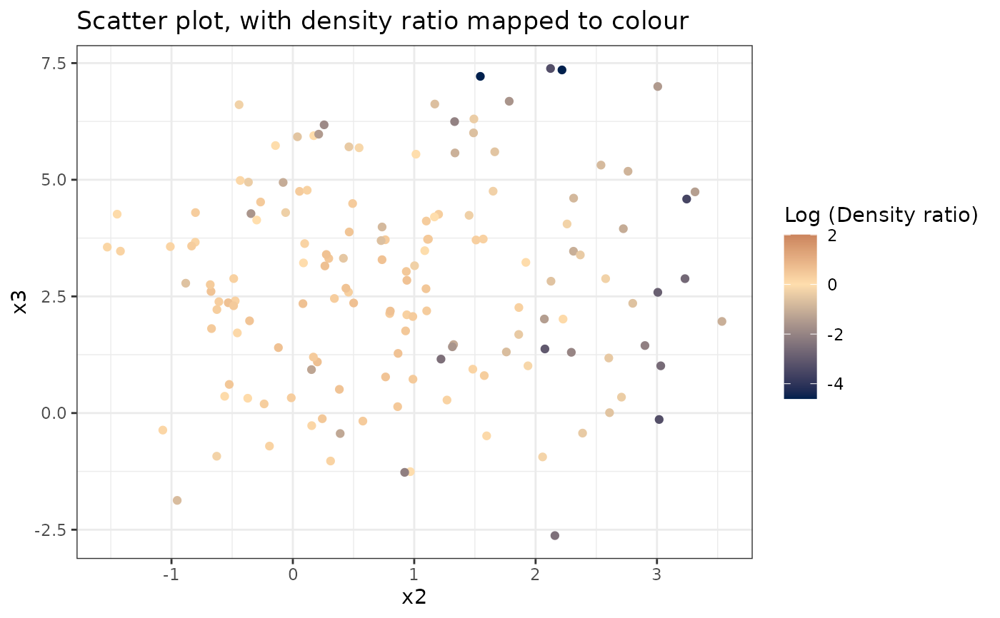

Obtain predicted density ratio values from a ulsif object
predict.ulsif.RdObtain predicted density ratio values from a ulsif object
Value
An array with predicted density ratio values from possibly new data, but otherwise the numerator samples.
Examples
set.seed(123)
# Fit model
dr <- ulsif(numerator_small, denominator_small)
# Inspect model object
dr
#>
#> Call:
#> ulsif(df_numerator = numerator_small, df_denominator = denominator_small)
#>
#> Kernel Information:
#> Kernel type: Gaussian with L2 norm distances
#> Number of kernels: 150
#> sigma: num [1:10] 0.711 1.08 1.333 1.538 1.742 ...
#>
#> Regularization parameter (lambda): num [1:20] 1000 483.3 233.6 112.9 54.6 ...
#>
#> Optimal sigma (loocv): 1.538158
#> Optimal lambda (loocv): 2.976351
#> Optimal kernel weights (loocv): num [1:151] 0.0666 0.0289 0.0423 0.0442 0.0454 ...
#>
# Obtain summary of model object
summary(dr)
#>
#> Call:
#> ulsif(df_numerator = numerator_small, df_denominator = denominator_small)
#>
#> Kernel Information:
#> Kernel type: Gaussian with L2 norm distances
#> Number of kernels: 150
#>
#> Optimal sigma: 1.538158
#> Optimal lambda: 2.976351
#> Optimal kernel weights: num [1:151] 0.0666 0.0289 0.0423 0.0442 0.0454 ...
#>
#> Pearson divergence between P(nu) and P(de): 0.3868
#> For a two-sample homogeneity test, use 'summary(x, test = TRUE)'.
#>
# Plot model object
plot(dr)
#> Warning: Negative estimated density ratios for 2 observation(s) converted to 0.01 before applying logarithmic transformation
#> `stat_bin()` using `bins = 30`. Pick better value with `binwidth`.

# Plot density ratio for each variable individually
plot_univariate(dr)
#> Warning: Negative estimated density ratios for 2 observation(s) converted to 0.01 before applying logarithmic transformation
#> [[1]]

#>
#> [[2]]

#>
#> [[3]]

#>
# Plot density ratio for each pair of variables
plot_bivariate(dr)
#> Warning: Negative estimated density ratios for 2 observation(s) converted to 0.01 before applying logarithmic transformation
#> [[1]]

#>
#> [[2]]

#>
#> [[3]]

#>
# Predict density ratio and inspect first 6 predictions
head(predict(dr))
#> , , 1
#>
#> [,1]
#> [1,] 0.9838195
#> [2,] 1.2872509
#> [3,] 1.5069634
#> [4,] 1.2804095
#> [5,] 1.0953012
#> [6,] 1.5262485
#>
# Fit model with custom parameters
ulsif(numerator_small, denominator_small, sigma = 2, lambda = 2)
#>
#> Call:
#> ulsif(df_numerator = numerator_small, df_denominator = denominator_small, sigma = 2, lambda = 2)
#>
#> Kernel Information:
#> Kernel type: Gaussian with L2 norm distances
#> Number of kernels: 150
#> sigma: num 2
#>
#> Regularization parameter (lambda): num 2
#>
#> Optimal sigma (loocv): 2
#> Optimal lambda (loocv): 2
#> Optimal kernel weights (loocv): num [1:151] 0.0378 0.0348 0.0554 0.053 0.0619 ...
#>